2020/0325Wedターコイズ色に染まる
switch liteでどうぶつの森はじめました
ずっとしてます☺︎
色はターコイズにしたのですが
身の回りにターコイズ色の物が多すぎて
何が何なのかパッと見わからんくなります。笑
あ、他のソフトも気になるので
おすすめがあったら是非教えてください❀
プレステのバイオ7も早くクリアしないとだ。

仕事の合間に母と待ち合わせをして
久しぶりにとんかつを食べました
母はとんかつが好きなので
母とご飯を食べに行くとなると
結構な確率でとんかつになります。笑
私はヒレカツが好きです

今日は19時〜premium music2020
に生出演します!
オープニングからご覧ください
お楽しみに~✿
そして23:45〜
文化放送 レコメン！
パーソナリティとしての出演は今日が最後です
ラジオって本当に楽しくて好きだから
別れが惜しいですが最後まで楽しみます...
よかったら1時まで聞いてください☺︎

黒髪がだんだんアッシュに色が抜けてきた~
髪質的に髪色抜けるのはやいのが悩みです...
次はどんな髪色に染めようかな?
やったことのない色にもしてみたいなぁ


最近は黒い服多めです
スカート丈もロングが好き
春やし明るい色や軽い素材の服も着たいなぁ
最近は楽しい撮影をたくさん
させていただいていて嬉しいです☺︎
また情報が解禁され次第、お知らせします!
でははは
2020/0323Mon#堀未央奈2nd写真集
2nd写真集の発売日が
2020年5月27日に決定しました！✨
そして先行カット2枚が解禁されました☺︎
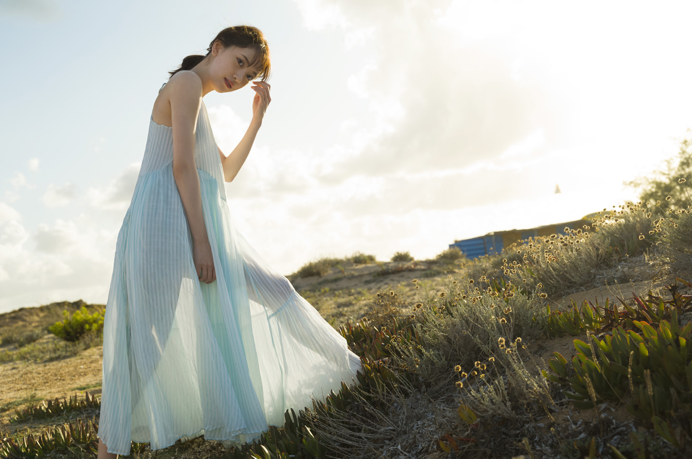
夕陽に沈む空が綺麗!
ワンピースの透けてる感じがお気に入り☺︎
コルシカ島の空港にて
ちなみにこれは私物のリュックとキャリーバッグです!笑
オフ感!笑
場所はずっと行きたかった南フランスのニースとコルシカ島。ニースは芸術家ピカソなどが訪れた街で、
実際にピカソらが来ていたレストランにも行ってきました!
コルシカ島も落ち着いた優雅な場所でヨーロッパの空気をたくさん味わいながらまったらりと撮影できました✨
今回の写真集は、1冊で1つのストーリーを作りたくて
ちなみにテーマは、
"付き合って1年の彼女との南仏旅行" です!
もう、ほんまに、彼女です♡
見てくださる方との距離感の近さはもちろん
一緒に旅行に行った気分になれるよう
こだわりました✨✨
堀未央奈の色んな顔が詰まった1冊となっています☺︎
1ページ1ページをストーリーとして楽しんでいただけたら嬉しいです。
子供?っていうくらい無邪気な私もいれば
23歳のちょっぴり大人な私もいて、
見どころ満載です!
早く見ていただきたいです☺︎
そして、特典付きの予約も開始しました!
見てくださる方との距離感の近さはもちろん
一緒に旅行に行った気分になれるよう
こだわりました✨✨
堀未央奈の色んな顔が詰まった1冊となっています☺︎
1ページ1ページをストーリーとして楽しんでいただけたら嬉しいです。
子供?っていうくらい無邪気な私もいれば
23歳のちょっぴり大人な私もいて、
見どころ満載です!
早く見ていただきたいです☺︎
そして、特典付きの予約も開始しました!
【特別付録】ポストカード8種のうち1種封入
■楽天ブックス①（楽天ブックス限定独占メイキング動画+ポストカード1種）
https://books.rakuten.co.jp/rb/16275200/
■楽天ブックス②（楽天ブックス限定アザーカバー＋ポストカード1種）
https://books.rakuten.co.jp/rb/16275199/
※上記ポストカードの絵柄は①②ともに同一のものとなります。
■セブンネットショッピング（セブンネット限定アザーカバー＋折り目ありB2サイズポスター1枚）
https://7net.omni7.jp/detail/1107083082
■HMV（HMV・loppi限定アザーカバー＋ポストカード1種）
https://www.hmv.co.jp/product/detail/10785595
■タワーレコード（クリアポストカード1種）
https://tower.jp/item/5038617
■乃木坂46 オフィシャルモバイルサイト（クリアファイル1種）
https://bit.ly/2UvF4Dp
予約はこちらから↑
数に限りがありまして御予約はお早めに(^-^)
色んな特典があるのでそこも楽しんでいただきたいです✨
よろしくお願いします!
続報やオフショットは
Twitter @horimiona2nd
Instagram @horimiona_2nd
にて☺︎
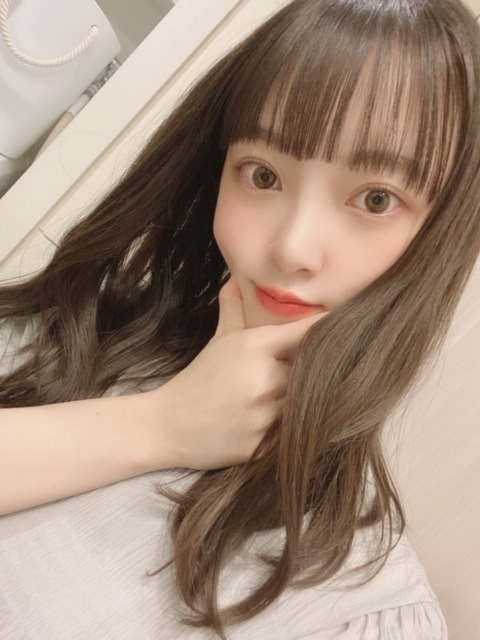
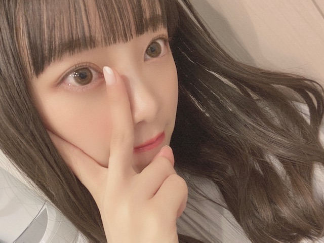
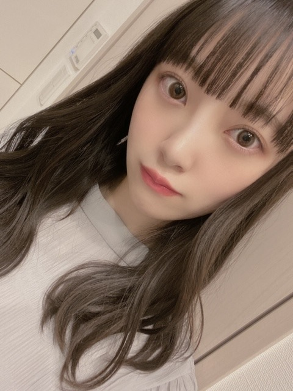
switch売り切れていたのでswitch lightにしました。笑
やっと、どうぶつの森ができる!
島の名前何にしようかな~
オリゴ島、すい島、ほう島、うーん
でははは
でははは
2020/0322SunauPAYマーケット
au PAY マーケットのCMに出させていただいています!
たまたまサイリウムカラーの
オレンジx白が衣装で嬉しかったぁ☺︎
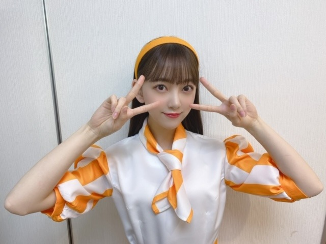
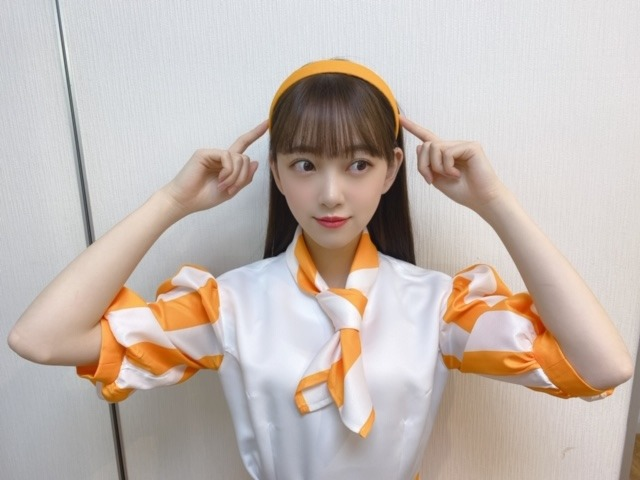
衣装さんが堀ちゃんはカチューシャが似合うから
と言ってカチューシャをスタイリングしてくださいました!
嬉しい...!
愛を感じました...
カチューシャ大好きです☺︎
au PAY マーケットで皆さんもぜひお買い物してくださいね!
そして今日は乃木坂工事中です~
予告の顔凄かったですね...
次の日全身筋肉痛でした...
見てください~
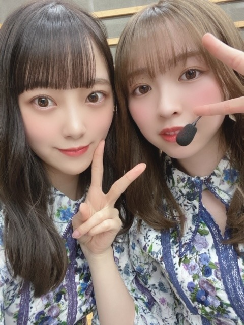
おんぷちゃんヘアメンバーからも好評で嬉しい♩
でははは
2020/0320Fri#絵心ない芸人
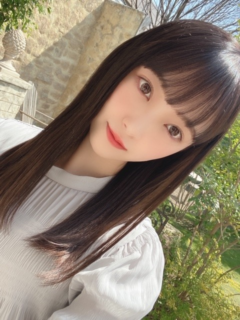
今日は19時〜
テレビ朝日 アメトーーク3時間SPの
絵心ない芸人に出させていただきます!
是非、ご覧ください☺︎
ちなみに、絵を描くのは幼少期から大好きです!
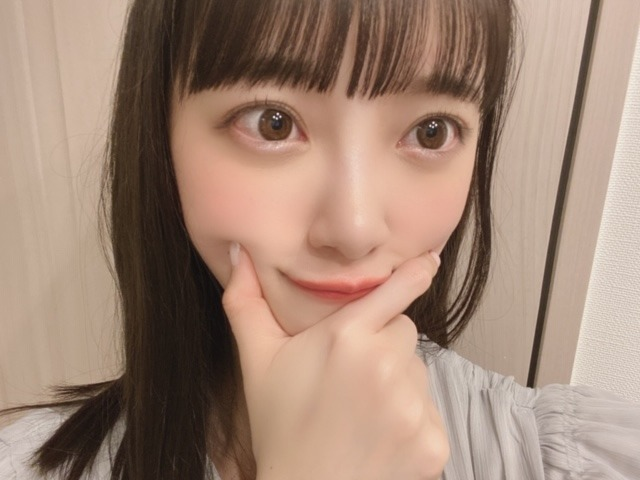
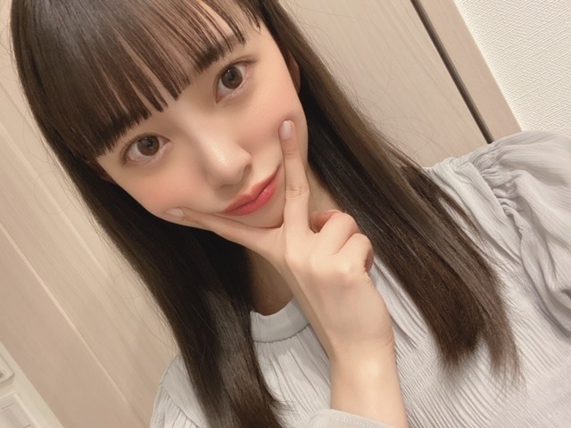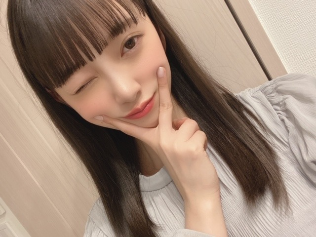
ポカポカした春日和は好きだけど
花粉つらい...
でははは
2020/0319Thuリンゴの余韻
こんにちは✿
昨日はレコメンに、みり愛と絢音が来てくれました
わ〜〜〜い
合間もずっとお喋りして
そのあとは2人がわたしのお家に泊まりにきて
それからまたお話ししてました(^-^)
楽しかったなぁ~
でも今ちょっと眠い...笑
今日も頑張りましょう!
レコメンパーソナリティもあと1回ですが
最後までよろしくお願いします
是非、聴いてください❁
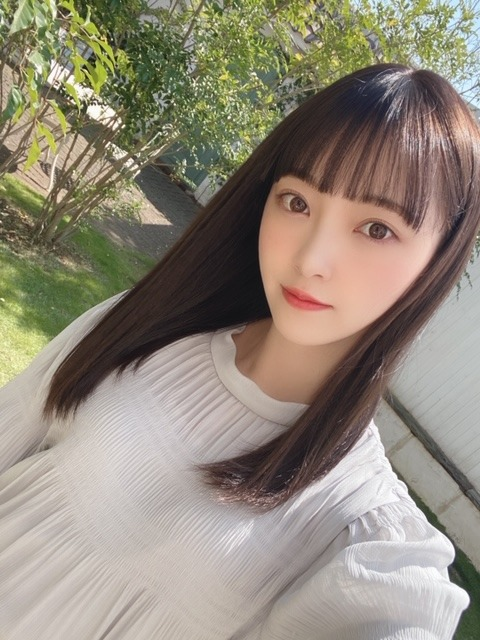
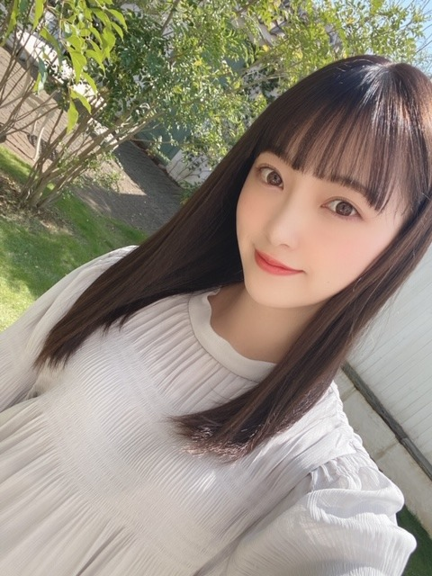
室内だと暗め、陽に当たるとほんのり明るめ
になるよう染めていただいてから少し日にちが経ち
いい感じに色が抜けてきました
アッシュ系が好きなのでこれからも
くすみカラー色々挑戦したいです
このカラー名は Pale Mint Beige ❁ です
今日は天気がいいですね~ ❁
天気がいい日はお弁当を持って
牧場とか公園に行きたくなりますね
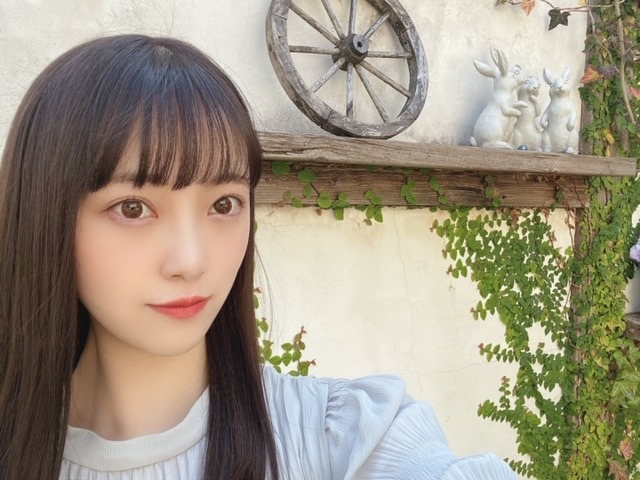
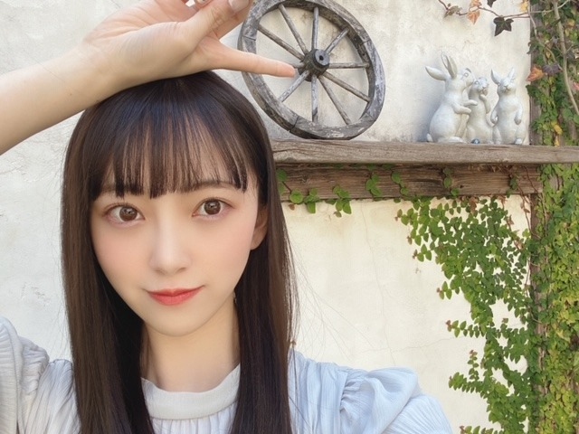
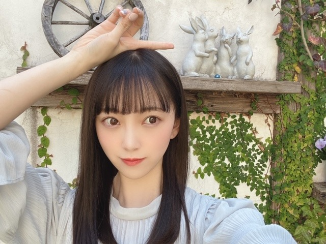
撮影スタジオが可愛かったので私服でパシャリ
この間1人で歩いていて4回つまずきました
久しぶりに履いた靴だからかな？とも思ったけど
スニーカーだしつまずいた場所段差もあったから
関係無さそう...
1人で転びそうになると恥ずかしいですよね
気をつけます
みなさんもお気をつけて...笑
では!
また更新しますね!
あ、皆さんおすすめの洋楽、
コメントにて教えてください!
こんにちは✿
昨日はレコメンに、みり愛と絢音が来てくれました
わ〜〜〜い
合間もずっとお喋りして
そのあとは2人がわたしのお家に泊まりにきて
それからまたお話ししてました(^-^)
楽しかったなぁ~
でも今ちょっと眠い...笑
今日も頑張りましょう!
レコメンパーソナリティもあと1回ですが
最後までよろしくお願いします
是非、聴いてください❁
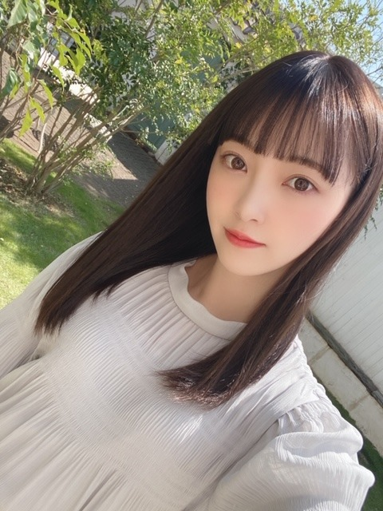
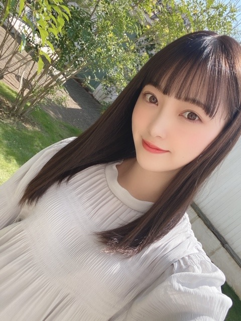
室内だと暗め、陽に当たるとほんのり明るめ
になるよう染めていただいてから少し日にちが経ち
いい感じに色が抜けてきました
アッシュ系が好きなのでこれからも
くすみカラー色々挑戦したいです
このカラー名は Pale Mint Beige ❁ です
今日は天気がいいですね~ ❁
天気がいい日はお弁当を持って
牧場とか公園に行きたくなりますね
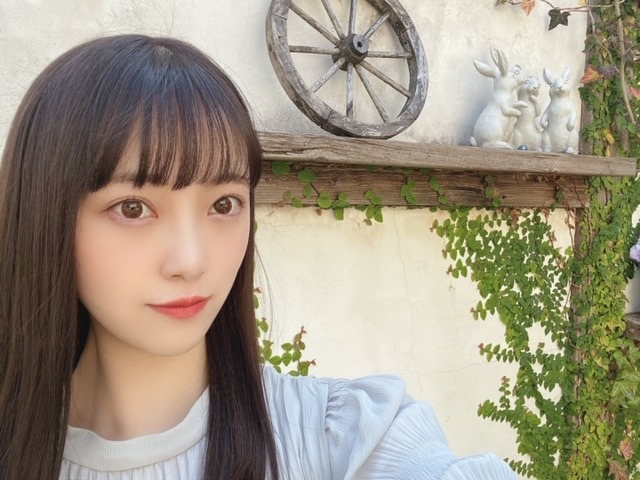
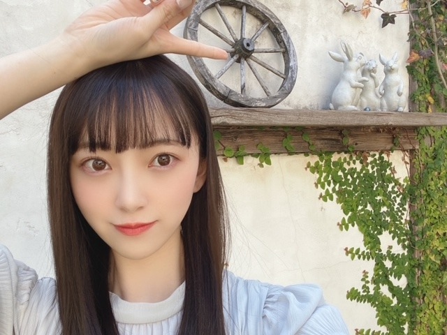
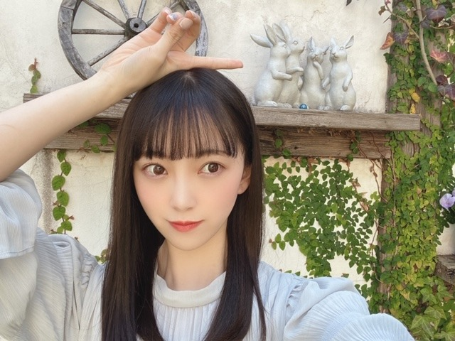
撮影スタジオが可愛かったので私服でパシャリ
この間1人で歩いていて4回つまずきました
久しぶりに履いた靴だからかな？とも思ったけど
スニーカーだしつまずいた場所段差もあったから
関係無さそう...
1人で転びそうになると恥ずかしいですよね
気をつけます
みなさんもお気をつけて...笑
では!
また更新しますね!
あ、皆さんおすすめの洋楽、
コメントにて教えてください!